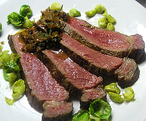

Ormalinger Cote de Boeuf vom Gallowayrind
5,5 von 6Das Rindskotelett anbraten bis es goldbraun ist. Das Fleisch aus der Pfanne nehmen, die äußere Fettschicht abschneiden und das Fleisch anschließend in eine ofenfeste Form legen. Nun einige Zweige Rosmarin und Salbei darauf legen und bei etwa 100 °C für circa 25 Minuten in den Ofen schieben. Das Fleisch ist gar, wenn es eine Innentemperatur von ca 53 Grad erreicht hat. Während das Fleisch im Ofen schmort, würfelt man das abgeschnittene Rinderfett ganz fein und gibt es abschließend zum Rösten in die Pfanne. Dann schneidet man eine Schalotte sehr fein, nimmt die Pfanne vom Herd und gibt die gerösteten Rinderfettwürfel in ein Sieb, damit das Bratfett abtropfen kann. Danach kommt das geröstete Fett mit den Schalottenwürfeln wieder in die Pfanne, bis sie glasig geworden sind. Das Ganze löscht man nun mit einem Schuss Portwein ab, gibt etwas Kalbsfond oder Rinderbrühe dazu und lässt es circa 5 Minuten einköcheln. Abgeschmeckt wird die Soße mit gemahlenem Pfeffer und grobem Meersalz, frischem Salbei und einem Schuss weißem Balsamico. Zum schluss etwas Butter darunter ziehen.
